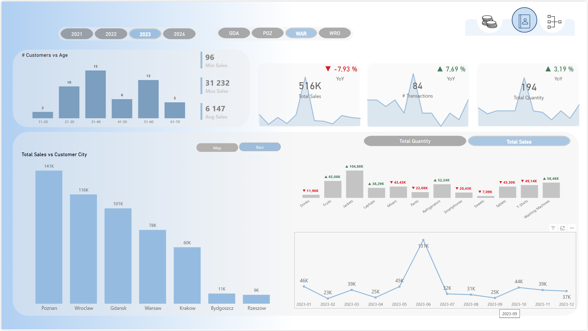
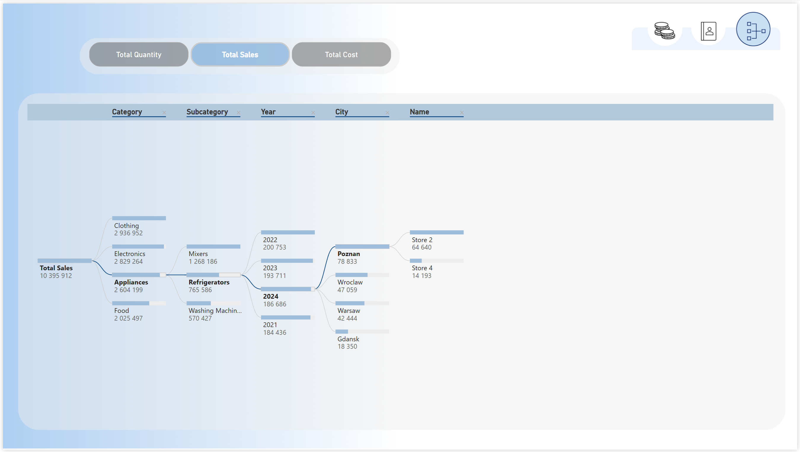

Project description
The goal of the project was to build an interactive Power BI report for analysing a company's sales data. The source data covers transactions, products, customers, stores and the budget. The report is meant to support managers in making decisions by:
- presenting key indicators (KPIs) for sales, costs and quantity;
- enabling analysis from different perspectives: time, geography and demographics;
- comparing actual results with the plan;
- identifying trends and deviations, including year-over-year (YoY) analysis;
- exploring the data with a decomposition tree.
The Power BI file (PBIX) and documentation describing the structure and data model, with a list of DAX measures, are available in the GitHub repository.
Technologies used
- Power Query – importing, transforming and preparing data for visualisation.
- DAX – calculating indicators and measures and creating tables.
- Power BI – visualising data and building interactive dashboards.
- Python – code that generates the sample data.
Report structure
The report has three pages:
- Sales Overview – the key KPIs: sales, costs and quantity sold. It also lets you compare sales against the plan and by subcategory, and see trends over time on a line chart.
- Customers – a page devoted to customer data. It shows the number and value of sales by customer city and age group.
- Decomposition Tree – used for detailed, hierarchical analysis of measures such as sales, quantity and costs.

Customer data analysis
One of my design goals was to analyse sales data in the context of customer data, to get a fuller picture of sales performance across customer groups. I wanted to analyse both the quantity and the value of sales, split by groups such as place of residence (city) or age group. This split shows how different customer segments contribute to sales results, which is key to better tailoring marketing and sales activities.

Decomposition tree
The decomposition tree (Fig. 3), placed on the last page, is a dynamic, interactive visual that lets you analyse data across many dimensions. It aggregates data automatically and lets you drill down in any order. It is a powerful tool that can make complex datasets much easier to understand and support business decisions.

Why build reports in Power BI
- Clarity and efficiency – advanced analytical features and interactive reports help present data clearly and efficiently, which makes business decisions easier.
- Integration with many data sources – Power BI connects data from databases, Excel files, cloud services and business applications, so reports can be comprehensive and consistent.
- Interactivity – users can interact with the data by filtering, sorting and exploring different views, which allows deeper analysis and better understanding.
- Easy comparison of data – dynamic charts make it quick to compare values across categories and to analyse trends.
- Choice of refresh frequency – depending on business needs, the user can set how often data is refreshed, so the analysis matches specific requirements and stays up to date.
Data source
The fact and dimension tables were generated with Python code, based on designed assumptions. The Python code is available in the GitHub repository.